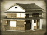

Requires
Enables
- Buildings: 
Basic Building Statistics (can be modified by difficulty level, arts, skills, traits and retainers)
- Cost: 3000
- +1000 to wealth generated by trade in this province
- +3 to happiness in this province
- Enables recruitment of Rank 1 geisha
- +2 per turn to town growth from trade within this province
Clan Effects
- -1 to modernisation (clan development)
Description
The twittering of sparrows can be costly.
This hotbed of criminality and gambling improves happiness in the province. It also gives geishas a chance to practice their skills, and so adds experience to any recruited here. Mahjong ("Sparrow Tiles" in the original Chinese) looks complicated, but is actually remarkably simple in principle, and ruthless in practice. Played with 136 ivory tiles, four players try to form matching groups of four tiles until "Mahjong" is called, gambling on the result as they do so. Based on an older Chinese card game, Ma-Taio, the Japanese embraced the game and made it a little more cutthroat. Richi Mahjong adds a winner-takes-all element that makes the game more of a race to victory. While gambling is now illegal in Japan, Richi Mahjong was once the perfect game for high-stakes excitement.